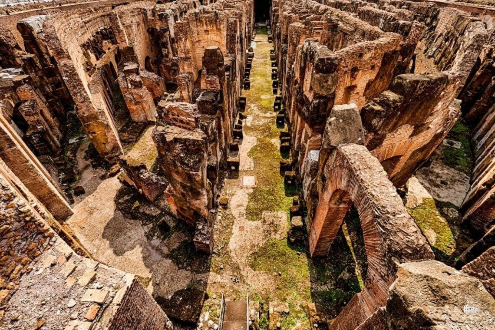
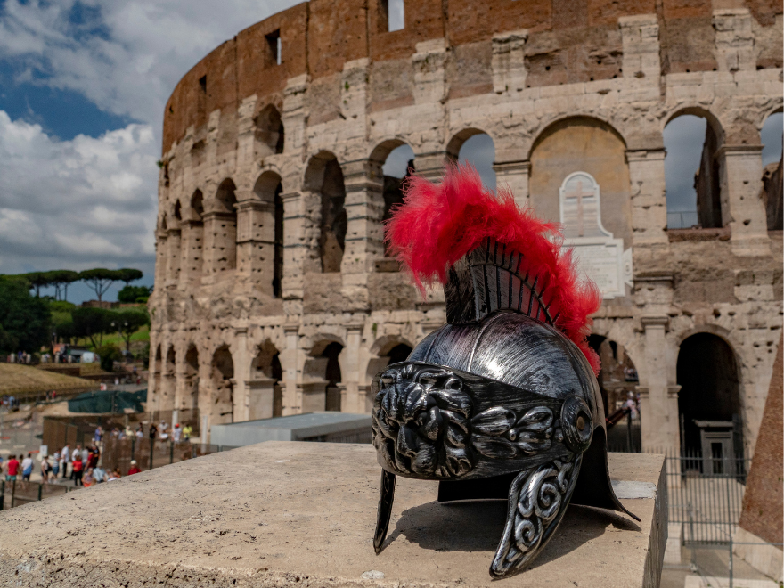
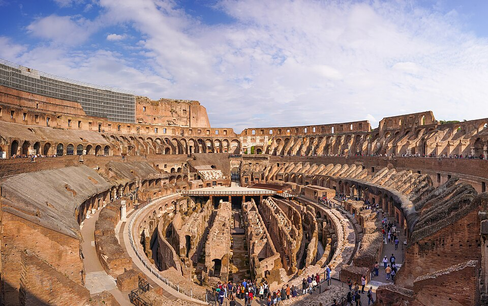

Um dos maiores símbolos do Império Romano
O Coliseu foi construído no século I durante o Império Romano. Ele era utilizado para batalhas de gladiadores, apresentações públicas e grandes eventos que reuniam milhares de pessoas.

Construído em 72 d.C. pelo imperador Vespasiano.

As batalhas eram o principal entretenimento romano.

O Coliseu podia receber mais de 50 mil pessoas.